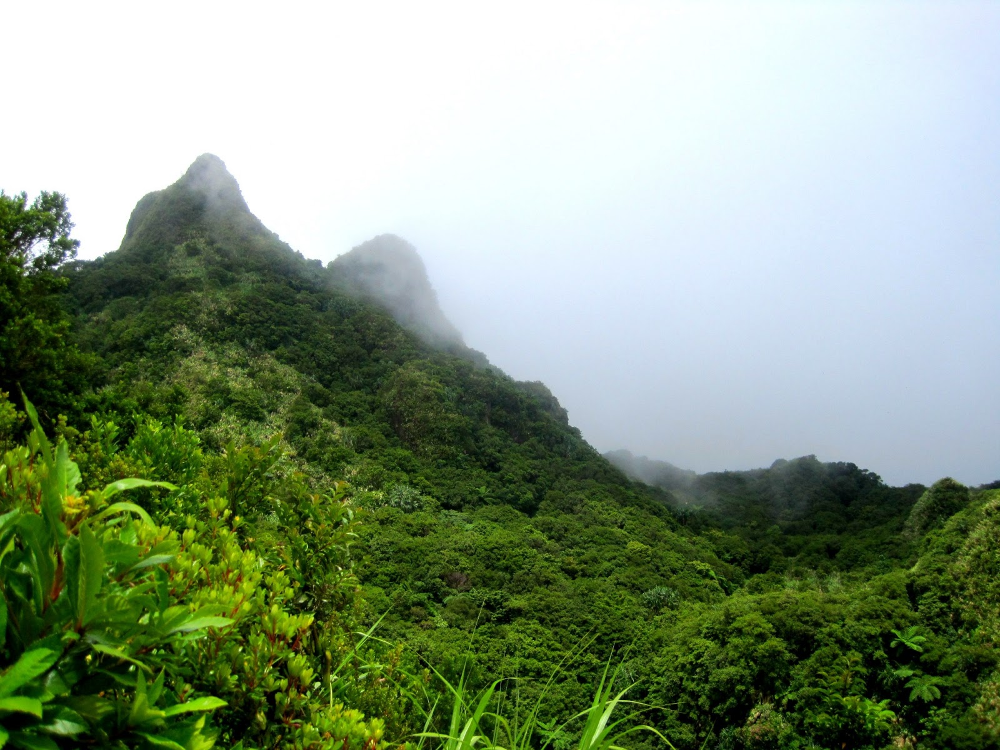
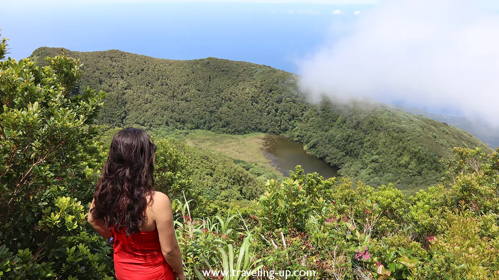
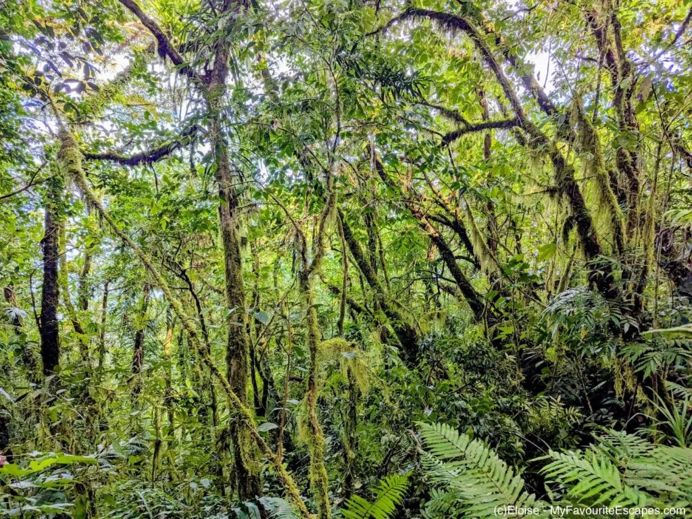
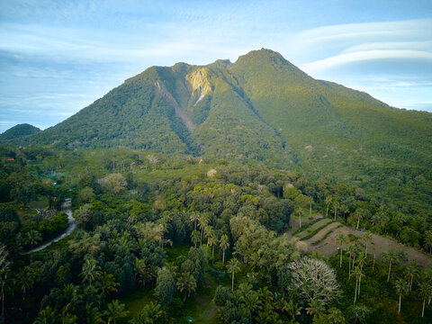

About Mt. Hibok-Hibok
Mt. Hibok-Hibok is the crown jewel of Camiguin — an active stratovolcano that dominates the island's skyline and defines its identity. Standing at 1,332 meters above sea level, it is one of the active volcanoes in the Philippines and a UNESCO-listed area of interest.
For trekkers and mountaineers, Hibok-Hibok presents a rewarding challenge. The trail to the summit passes through lush vegetation, volcanic rock formations, and crater lakes before opening up to a panoramic view of the entire island and the surrounding Bohol Sea.





🦶 Trekking Info
The trek takes approximately 6–8 hours to complete. A registered guide is required. Register at the DENR office in Mambajao before your climb.
⏰ Best Time to Visit
The dry season from March to May offers the safest and clearest trekking conditions. Avoid the rainy season due to slippery trails and low visibility.
💡 Travel Tips
Bring at least 2 liters of water, energy food, and proper trekking shoes. Start early — ideally before 5 AM — to reach the summit by midday and descend safely.